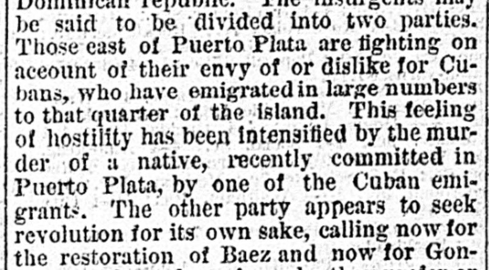

The other party appears to seek revolution for its own sakeEl otro partido parece buscar la revolución por la revolución misma
The newspaper reported that local hostility toward Cuban emigrants in Puerto Plata—intensified by the murder of a native—alongside revolutionary factions seeking the restoration of either Baez or Gonzales, led to an insurrection. In response, President Espaillat declared the entire republic in a state of siege and sent troops to the area, where insurgents surrounded Puerto Plata and prevented the steamer Tobcc from landing its cargo.El periódico informó que la hostilidad local hacia los emigrados cubanos en Puerto Plata —agravada por la muerte violenta de un lugareño—, unida a facciones revolucionarias que promovían la restitución de Báez o de González, desembocó en una insurrección. En respuesta, el presidente Espaillat declaró a toda la república en estado de sitio y despachó tropas a la comarca, donde los insurgentes cercaron Puerto Plata e impidieron que el vapor Tybee desembarcara su carga.
FULL TEXT:TRADUCCIÓN:
A DOUBLE-HEADED INSURRECTION IN SAN DOMINGOUNA INSURRECCIÓN DE DOBLE CABEZA EN SANTO DOMINGO
HAVANA, August 12.—Advices from San Domingo of July 18th report that an insurrection has broken out in the Ciboa provinces, formerly the northern part of the Dominican republic. The insurgents may be said to be divided into two parties. Those east of Puerto Plata are fighting on account of their envy of or dislike for Cubans, who have emigrated in large numbers to that quarter of the island. This feeling of hostility has been intensified by the murder of a native, recently committed in Puerto Plata, by one of the Cuban emigrants. The other party appears to seek revolution for its own sake, calling now for the restoration of Baez and now for Gonzales, without knowing who they prefer or what they want.LA HABANA, 12 de agosto.—Noticias de Santo Domingo del 18 de julio informan que una insurrección ha estallado en las provincias del Ciboa, antiguamente la parte norte de la república dominicana. Puede decirse que los insurgentes están divididos en dos partidos. Los que están al este de Puerto Plata luchan a causa de su envidia o aversión hacia los cubanos, que han emigrado en gran número a ese sector de la isla. Este sentimiento de hostilidad ha sido intensificado por el asesinato de un nativo, recientemente cometido en Puerto Plata, por uno de los emigrantes cubanos. El otro partido parece buscar la revolución por sí misma, llamando ahora por la restauración de Báez y ahora por González, sin saber a quién prefieren ni qué quieren.
President Espaillat has promptly taken vigorous measures to quell the insurrection. The whole republic has been declared in a state of siege, and troops have been dispatched from the capital to the scene of insurrection. At last accounts Puerto Plata was surrounded by insurgents, who had made several ineffectual attempts to enter the town.El presidente Espaillat ha tomado prontamente medidas vigorosas para sofocar la insurrección. Toda la república ha sido declarada en estado de sitio, y tropas han sido despachadas desde la capital a la escena de la insurrección. A las últimas noticias Puerto Plata estaba rodeada por insurgentes, que habían hecho varios intentos ineficaces de entrar en el pueblo.
The steamer Tybee had touched at Puerto Plata from New York, but was unable to land her cargo on account of fighting there, and left for San Domingo city.El vapor Tybee había tocado en Puerto Plata procedente de Nueva York, pero no pudo desembarcar su carga a causa de la lucha allí, y partió hacia la ciudad de Santo Domingo.
The Daily Dispatch. Richmond, August 14, 1876. Page 3.